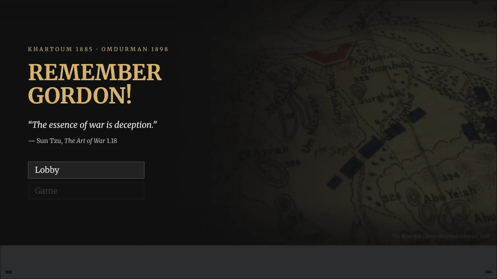
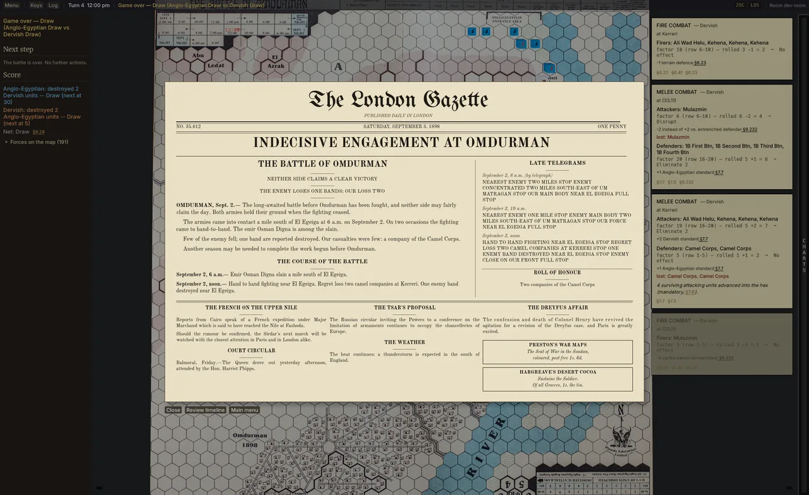

Remember Gordon! The Battle of Omdurman (Phoenix Enterprises, 1982) as a Rust/Bevy hex wargame with peer-to-peer play, a bot and a rules engine traced to the rulebook.
- PR #2 merged 10-05: deterministic press, one UI, overlays that fit, set-up and rules fixes. 82 commits on 10-04 alone.
- Two-instance play-test on 10-05; its findings fixed, rulings on branch playtest-rulings-2026-10-05.
- Rules: river chain per §10.21–§10.23; transport unlock when the Isa Zachneih deserts; Kani melee harnesses fixed.
- Per-frame work cut to state changes; dead code removed across app, board, rules and types crates; mutation gate on cargo-mutants 27.
- 10-06: board animation in one fx module; bot joins weak weapons to massed-fire targets.

